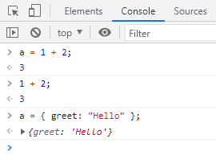
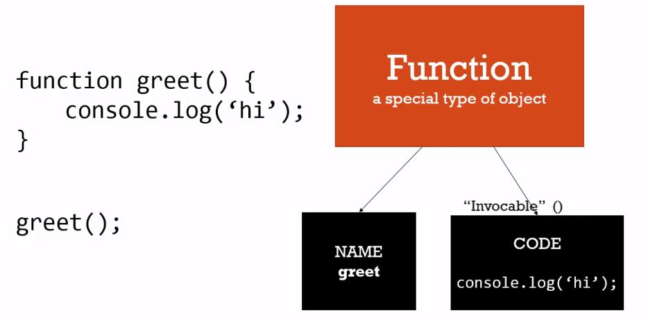
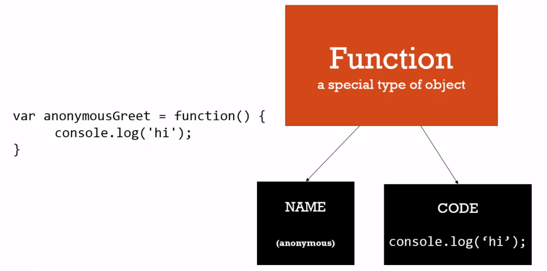
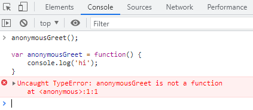
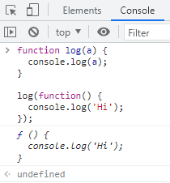

函數的陳述句與表達式的用法
在這堂課中，將介紹函數陳述式 Function Statement 和函數表達式 Function Expressions 兩種函數的建立方式
表達式 Expressions 和 陳述句 Statement 的差異
表達式 Expressions
Expressions 指的是會回傳值的一串程式，這個值可以是任何型別如字串、數字或物件，而這個值可以將它存成一個變數也可以不用。
如下，在瀏覽器的 console 中輸入 a = 1 + 2 時會回傳 3，直接輸入 1 + 2 也會回傳 3;輸入 a = { greet: 'Hello' } 時就會回傳物件

陳述句 Statement
相對的，不會回傳值的就是一個陳述句，如下程式碼:
1 | if (a === 3) { |
這段程式碼中因為 a === 3 是一個 Expression，因為會回傳 true 或 false; 而 if 這個指令是一個 Statement，因為不會回傳一個值，所以我們也不能將他指定給一個變數
1 | // 錯誤寫法 |
函數表達式 Function Expressions 和 函數陳述句 Function Statements
在 JavaScript 中，函數是一個物件，可以透過 Expressions 和 Statements 的方式建立
函數陳述句 Function Statements
一個最基本的 Function Statements 如下
1 | function greet() { |
Function Statements 的特色在於，他不會回傳一個值，且在程式一開始就會透過 hoisting 先儲存在記憶體中，所以可以在這段程式碼前就呼叫它而不會出錯
1 | greet(); |
在 JavaScript 中函數就是一個物件，透過物件的方式理解函數的話，這個函數會有一個屬性 name 的值為 greet和一個屬性 code 的值為 console.log('Hi')

函數表達式 Function Expressions
在 JavaScript 中，函數就是物件的一種，所以可以將它儲存在一個變數中
1 | var anonymousGreet = function () { |
如上程式碼，function() { console.log('hi') } 就是一個 Function Expressions ，我們可以將這個函數表達式存在 anonymousGreet 這個變數之中; 這裡可以發現，因為我們已將函數存在變數之中，所以這個函數不需要 name， 因為透過這個變數我們就知道這個函數在記憶體中的位置了，而這也就式匿名函數 Anonymous Function

與 Function Statement 不同的是，Function Expressions 將函數指定給一個變數，在 JavaScript 一開始執行的時候，並不會被 hoisting，只有變數的名稱會被存在記憶體中，而變數的預設值為 undefined，所以在 Function Expressions 前呼叫它就如同呼叫一個 undefined

函式中的函式
如下程式碼，我們將不同型別的值帶入函數中並執行
1 | function log(a) { |
當然我們也可以將這些值預先透過變數宣告，再指定到函式當中，也會得到一樣的結果:
1 | function log(a) { |
將函式帶入函式
如果將一個匿名函式 Anonymous Function 作為變數帶入函式之中，這時就如同創造了一個函式來使用 (Create the function on the fly)
1 | function log(a) { |
這時候就會將整個函式回傳

如果要執行傳入的函式，只要將原先的 log 函式稍做更改，呼叫傳入的變數，呼應到 JavaScript 非同步的特性，藉此可以確保函式執行的順序，這也是開發上和許多套件中會使用到回呼函式 callback function
1 | function log(a) { |